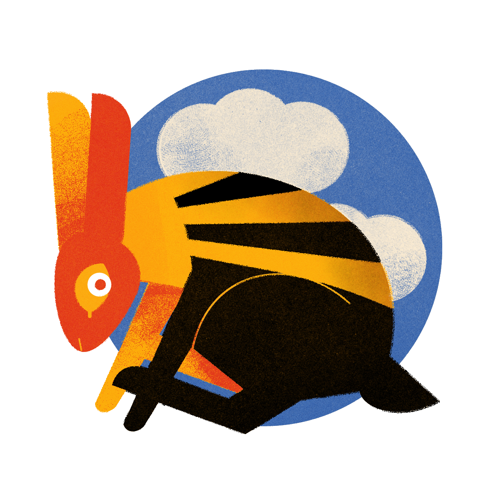

About Me

Hi! My name is Monica, people usually just call me Mo.
An illustrator / graphic designer who likes bugs and bones and ethereal stuff.
I think primary colors are COOL.
Recently, I've been learning how to talk to computers, so this space is going to serve as a repository for my more successful attempts at communication. Check out the portfolio tab over there to see some work!